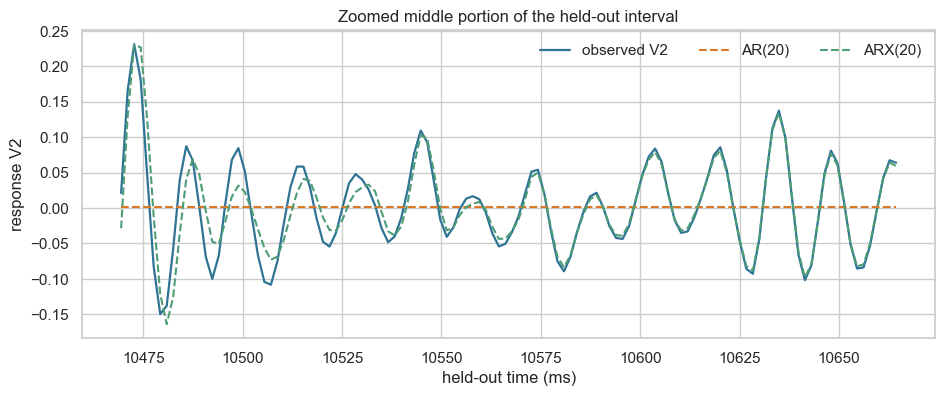

# This package downloads the official Silverbox benchmark when it is first used.
try:
from nonlinear_benchmarks import Silverbox
except ModuleNotFoundError:
%pip install -q nonlinear-benchmarks
from nonlinear_benchmarks import Silverbox
from pathlib import Path
import matplotlib.pyplot as plt
import numpy as np
import pandas as pd
import seaborn as sns
from sklearn.linear_model import LinearRegression
from sklearn.preprocessing import StandardScaler
sns.set_theme(style="whitegrid", context="notebook")
RANDOM_SEED = 7
np.random.seed(RANDOM_SEED)Input–response forecasting with AR and ARX

The Silverbox benchmark records the response of an electronic system designed to behave like a Duffing oscillator. It provides one deliberately applied input, V1, and one measured response, V2. A useful mechanical analogy is a force-like excitation \(u_t\) and a displacement-like response \(y_t\).
We will forecast the response first from its past values alone, then with the known applied input. Both models use the same chronological training/held-out experiment split and the same recursive multi-step test.
What you will do
- Load one real input–response system-identification benchmark.
- Preserve its chronological training/test experiment split.
- Fit an AR(20) model using only past response values.
- Add the known forcing signal to create an ARX(20) model.
- Compare the two models using the same recursive multi-step held-out forecast.
1. Load the measured input–response experiments
The nonlinear-benchmarks package downloads the official Silverbox record to the notebook runtime. Nothing is fitted to the held-out experiment.
# Store the official download in the notebook's local working directory.
# In Colab, this directory is temporary and disappears when the runtime ends.
benchmark_directory = Path("silverbox-data")
benchmark_directory.mkdir(exist_ok=True)
training_record, test_records = Silverbox(dir_placement=benchmark_directory)
test_record = test_records[0] # The official held-out multisine experiment.
u_train = np.asarray(training_record.u, dtype=float).reshape(-1)
y_train = np.asarray(training_record.y, dtype=float).reshape(-1)
u_test = np.asarray(test_record.u, dtype=float).reshape(-1)
y_test = np.asarray(test_record.y, dtype=float).reshape(-1)
sampling_time = float(training_record.sampling_time)
print(f"Training samples: {len(y_train):,}")
print(f"Held-out samples: {len(y_test):,}")
print(f"Sampling interval: {sampling_time * 1_000:.4f} ms")dataset not found downloading from https://drive.google.com/file/d/17iS-6oBUUgrmiAcrZoG9S5sOaljZnDSy/view
in silverbox-data/Silverbox/SilverboxFiles.zip
extracting file...
save_loc='silverbox-data/Silverbox/SilverboxFiles.zip'
Training samples: 65,062
Held-out samples: 21,688
Sampling interval: 1.6384 msdisplay_samples = 1_500
time_ms = np.arange(display_samples) * sampling_time * 1_000
fig, axes = plt.subplots(2, 1, figsize=(11, 5), sharex=True)
axes[0].plot(time_ms, u_train[:display_samples], color="#7c4d9e", linewidth=1)
axes[0].set(ylabel="input $u_t$ (V1)", title="A short portion of the training experiment")
axes[1].plot(time_ms, y_train[:display_samples], color="#2f7395", linewidth=1)
axes[1].set(xlabel="time (ms)", ylabel="response $y_t$ (V2)")
plt.tight_layout()
plt.show()
2. Set up one forecasting protocol
An autoregressive (AR) model forecasts a response from its own past values. An autoregressive model with exogenous input (ARX) extends that idea by adding one or more external signals that are available at prediction time. Such an input might be a commanded actuator signal, an ambient measurement, or a known operating schedule; it is exogenous because it is supplied from outside the response’s own history.
Here, V1 is the exogenous input and V2 is the response. We first forecast V2 purely from its own past values, then add the known applied input V1.
There are two useful forecasting protocols:
- One-step-ahead forecasting (observed lags): use the actual preceding
V2measurements at every time step. - Recursive multi-step forecasting (predicted lags): after an initial window, reuse each prediction as a lagged
V2input for later predictions.
We use recursive multi-step forecasting throughout this notebook. Every model uses the first \(p=20\) measured responses in the held-out experiment only to initialize its lag history. Afterwards, later true V2 responses are not fed back to the model.
The applied input \(u_t\) remains known throughout the held-out experiment. That is natural in system identification: it is an externally imposed forcing signal, not an unknown future response measurement.
For this example, the two linear models are
\[ \begin{aligned} \text{AR}(p):\quad \widehat{y}_t &= \beta_0 + \sum_{j=1}^{p}\beta_j y_{t-j},\\ \text{ARX}(p):\quad \widehat{y}_t &= \beta_0 + \sum_{j=1}^{p}\beta_j y_{t-j} + \sum_{j=0}^{p}\gamma_j u_{t-j}. \end{aligned} \]
ORDER = 20
def make_linear_design(
*,
input_signal: np.ndarray,
output_signal: np.ndarray,
order: int,
include_input: bool,
) -> tuple[np.ndarray, np.ndarray]:
"""Build one-step input rows for an AR or ARX model."""
rows: list[np.ndarray] = []
targets: list[float] = []
for index in range(order, len(output_signal)):
response_lags = output_signal[index - order : index][::-1]
if include_input:
input_lags = input_signal[index - order : index + 1][::-1]
rows.append(np.concatenate((response_lags, input_lags)))
else:
rows.append(response_lags)
targets.append(output_signal[index])
return np.asarray(rows), np.asarray(targets)
def fit_linear_forecaster(
*,
input_signal: np.ndarray,
output_signal: np.ndarray,
order: int,
include_input: bool,
) -> tuple[StandardScaler, LinearRegression]:
"""Fit a linear AR or ARX forecaster using training data only."""
features, targets = make_linear_design(
input_signal=input_signal,
output_signal=output_signal,
order=order,
include_input=include_input,
)
scaler = StandardScaler().fit(features)
model = LinearRegression().fit(scaler.transform(features), targets)
return scaler, model
def recursive_linear_forecast(
*,
input_signal: np.ndarray,
observed_output: np.ndarray,
order: int,
include_input: bool,
scaler: StandardScaler,
model: LinearRegression,
) -> np.ndarray:
"""Make a recursive multi-step forecast after an initial response window."""
history = list(observed_output[:order])
predictions = np.full(len(observed_output), np.nan)
for index in range(order, len(observed_output)):
response_lags = np.asarray(history[-order:][::-1])
if include_input:
input_lags = input_signal[index - order : index + 1][::-1]
feature_row = np.concatenate((response_lags, input_lags))
else:
feature_row = response_lags
prediction = model.predict(scaler.transform(feature_row.reshape(1, -1)))[0]
history.append(float(prediction))
predictions[index] = prediction
return predictions
def rmse(*, actual: np.ndarray, predicted: np.ndarray, warmup: int) -> float:
"""Calculate root-mean-square error after the initialization window."""
return float(np.sqrt(np.mean((actual[warmup:] - predicted[warmup:]) ** 2)))3. Start with a response-only AR(20) model
The AR model has 20 lagged V2 values but no access to V1. During the recursive multi-step held-out forecast, it must infer future responses solely from its own earlier response forecasts.
ar_scaler, ar_model = fit_linear_forecaster(
input_signal=u_train,
output_signal=y_train,
order=ORDER,
include_input=False,
)
ar_prediction = recursive_linear_forecast(
input_signal=u_test,
observed_output=y_test,
order=ORDER,
include_input=False,
scaler=ar_scaler,
model=ar_model,
)
ar_rmse = rmse(actual=y_test, predicted=ar_prediction, warmup=ORDER)
print(f"AR({ORDER}) recursive multi-step held-out RMSE: {ar_rmse:.5f}")AR(20) recursive multi-step held-out RMSE: 0.054294. Add the causal forcing signal: ARX(20)
In this Silverbox system, V1 is the ARX model’s exogenous input. The model receives the same response history plus the current and 20 previous V1 values. Because V1 is deliberately imposed on the physical system, it is reasonable to treat it as known at prediction time. This is different from leaking later V2 labels into the model.
arx_scaler, arx_model = fit_linear_forecaster(
input_signal=u_train,
output_signal=y_train,
order=ORDER,
include_input=True,
)
arx_prediction = recursive_linear_forecast(
input_signal=u_test,
observed_output=y_test,
order=ORDER,
include_input=True,
scaler=arx_scaler,
model=arx_model,
)
arx_rmse = rmse(actual=y_test, predicted=arx_prediction, warmup=ORDER)
print(f"ARX({ORDER}) recursive multi-step held-out RMSE: {arx_rmse:.5f}")
window_start = 6_000
window_length = 900
window = slice(window_start, window_start + window_length)
window_time = np.arange(window_start, window_start + window_length) * sampling_time * 1_000
fig, ax = plt.subplots(figsize=(11, 4))
ax.plot(window_time, y_test[window], color="#2f7395", linewidth=1.4, label="observed V2")
ax.plot(window_time, ar_prediction[window], color="#d97927", linestyle="--", label="AR(20)")
ax.plot(window_time, arx_prediction[window], color="#4d9d75", linestyle="--", label="ARX(20)")
ax.set(xlabel="held-out time (ms)", ylabel="response V2", title="Known forcing signal substantially improves the linear forecast")
ax.legend(frameon=False, ncol=3)
plt.show()
# Inspect the middle of the displayed interval on a tighter time scale.
zoom_window_start = window_start + window_length // 2 - 60
zoom_window_length = 120
zoom_window = slice(zoom_window_start, zoom_window_start + zoom_window_length)
zoom_time = np.arange(zoom_window_start, zoom_window_start + zoom_window_length) * sampling_time * 1_000
fig, ax = plt.subplots(figsize=(11, 4))
ax.plot(zoom_time, y_test[zoom_window], color="#2f7395", linewidth=1.6, label="observed V2")
ax.plot(zoom_time, ar_prediction[zoom_window], color="#d97927", linestyle="--", label="AR(20)")
ax.plot(zoom_time, arx_prediction[zoom_window], color="#4d9d75", linestyle="--", label="ARX(20)")
ax.set(
xlabel="held-out time (ms)",
ylabel="response V2",
title="Zoomed middle portion of the held-out interval",
)
ax.legend(frameon=False, ncol=3)
plt.show()ARX(20) recursive multi-step held-out RMSE: 0.00694

5. Takeaway
- AR uses only the response’s own previous values.
- ARX adds a known external input, which is appropriate here because
V1is deliberately imposed on the physical system. - Both models must recursively reuse their own predicted responses after initialization, so the held-out forecast is a genuine multi-step test.
The next notebook uses the same data and protocol to replace the fixed linear lag representation with a learned nonlinear recurrent state.